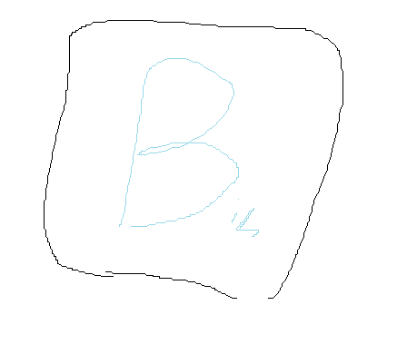

<ui:composition xmlns="http://www.w3.org/1999/xhtml"
	xmlns:f="http://java.sun.com/jsf/core"
	xmlns:h="http://java.sun.com/jsf/html"
	xmlns:p="http://primefaces.org/ui"
	xmlns:ui="http://java.sun.com/jsf/facelets"
	template="../WEB-INF/templates/master.xhtml">

	<ui:define name="content">

<style>
	.centered {
 	   text-align: center;
	}
	.fixed-size-img {
      	  width: 230px; 
     	  height: 100px;
    	}
        img {
          display: block;
          margin-left: auto;
          margin-right: auto;
	}


</style>

<p> 
<h1 class="centered">
                           Bing Ai Art Creator App
</h1>
</p>
<p>  
This page will show you what the bing ai creator is and what this ai app is.
</p>
<p>                        
So you have to go to the App Store on your mobile device and serch "bing". 
</p>
 


                        
                        
                        
                    
<p>                                   
so, when you are on the bing app, you might have a "sign in" screen on your device.
you need a micsoft account. you whill need to sign in to your micsoft account 
if you don't have a micorsoft account or don't know what it is, you can go to this
    <a href="https://www.youtube.com/watch?v=80ow9FoMDvA">link</a> 
</p>

<p>
When you are signed in, you whill be on the homepage whith manny options. 
You can check those out later, but we are here for bing ai creator, not anything
else. So, scroll over till you see the paintbrush and picture icon. Click
on it. 
</p>
<p> o
	</ui:define>
</ui:composition>


